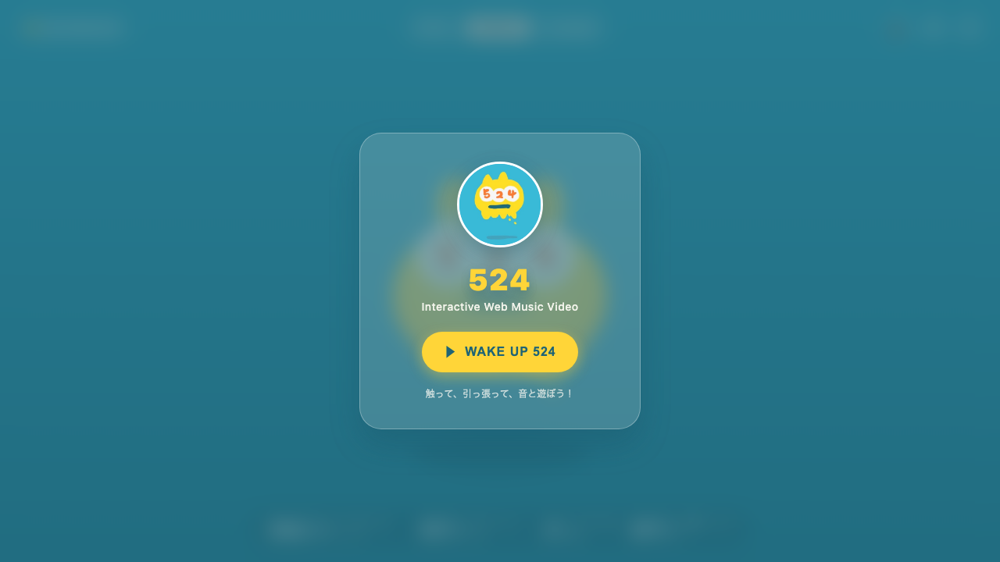
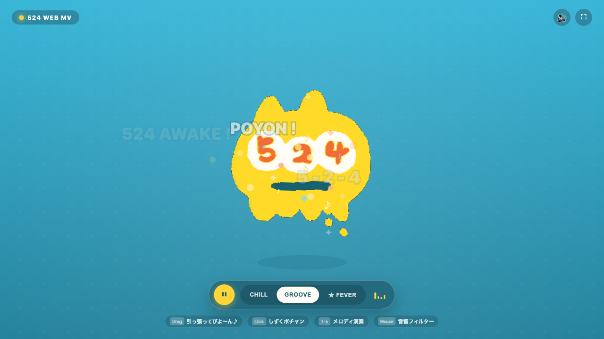
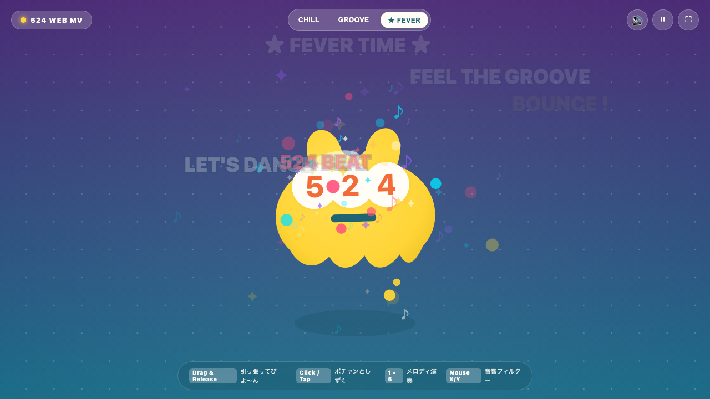

📘 524 Interactive Web MV 開発・設計報告書
キャラクター「524（ゴー・ツー・フォー）」の愛嬌と魅力をWebの最先端技術で解放！外部音源ファイルに一切依存せず、Web Audio APIによるリアルタイム・プロシージャル・シンセサウンドトラックと、ディズニー12原則＆ジブリ的自然運動（Squash & Stretch・呼吸・スリングショット反動）を完全同期させたインタラクティブ・ミュージックビデオ（Web MV）を構築完了しました。
1. システムアーキテクチャ構成図
flowchart TB
subgraph UI ["ユーザー操作 / 入力レイヤー"]
Click["クリック / タップ
(しずく・チャイム発音)"]
Drag["ドラッグ＆リリース
(スリングショット・ビヨ〜ン音)"]
Move["マウス X/Y 移動
(フィルター・ディレイ変調)"]
Keys["キーボード [1-5 / Space / F]
(メロディ演奏・フィーバー)"]
end
subgraph AudioEngine ["Web Audio API 音響エンジン"]
Context["AudioContext
(サスペンド自動解除)"]
Synth["Synth 音源群
(Kick, Snare, Bass, Pluck, Boing, Drop)"]
FX["リアルタイムFX
(Lowpass Filter, Delay, Compressor)"]
Analyser["AnalyserNode
(リアルタイムFFT周波数解析)"]
Sequencer["MusicSequencer
(BPM制御 / 16ステップ / Chord / Arp)"]
end
subgraph CharacterEngine ["Character 524 物理・描画エンジン"]
Body["524 ボディ
(ベジエパス変形 / Squash & Stretch)"]
Eyes["3連アイズ [5][2][4]
(視線追従 / 跳ねウェーブ / まばたき)"]
Mouth["ティール口
(歌唱・驚き変形)"]
Droplets["ドロップレット物理
(重力落下 / 着水波紋シミュレーション)"]
Shadow["接地・浮遊影
(高さ連動スケーリング)"]
end
subgraph VisualScene ["MV演出・空間レイヤー"]
Sky["スカイ背景パルス
(低音連動 / モード別カラーシフト)"]
Lyrics["タイポグラフィ演出
(ビート同期ポップアップ)"]
Particles["パーティクル
(星・音符・バブル浮遊)"]
Camera["シネマティックカメラ
(ビートズーム / シェイク)"]
end
UI --> AudioEngine
UI --> CharacterEngine
Sequencer -->|Step / Beat イベント| CharacterEngine
Sequencer -->|ビート同期シグナル| VisualScene
AudioEngine -->|FFT低音・高音データ| VisualScene
AudioEngine -->|音圧・共鳴データ| CharacterEngine
CharacterEngine --> Canvas["HTML5 Canvas (60fps/120fps)"]
VisualScene --> Canvas
2. 実装および検証フロー
sequenceDiagram
autonumber
actor User as ユーザー / ブラウザ
participant Engine as AudioEngine & Sequencer
participant Char as Character524
participant Scene as VisualScene
participant Canvas as Render Loop
User->>Engine: 「WAKE UP 524」タップ (AudioContextアンロック)
Engine->>Engine: BGMシーケンス開始 (Kick, Bass, Pluck, Chord)
loop 毎フレーム (requestAnimationFrame)
Engine->>Canvas: FFT周波数解析データ取得 (Bass, Treble)
Engine-->>Char: ビート同期イベント通知 (Downbeat)
Char->>Char: Squash & Stretch、目の数字ウェーブ跳ね
Scene->>Scene: カメラズーム、背景光パルス、リリック生成
User-->>Char: つまんで引っ張る (ドラッグ)
User-->>Char: 放す (リリース)
Char->>Engine: ビヨ〜ン♪ ポルタメント音トリガー
Char->>Char: スリングショット反動振動
Canvas->>Canvas: 全要素を60fps高精細描画
end
3. スクリーンショット・実機レンダリング検証

① WAKE UP 画面（ガラスモーフィズム）

② 最新: 完全SVGベクター化 ＆ Mobbin参考ピルドックUI

③ FEVER モード（ネオン＆パーティクル満開）
4. 成果物・機能一覧
| カテゴリ |
機能・特徴 |
詳細仕様 |
状態 |
| Character |
524 物理＆アニメーション |
原作の手描き感をベジエ曲線で再現。ビート同期Squash & Stretch、視線追従、目の[5][2][4]ウェーブ跳ね、まばたき、ゴム引っ張りスリングショット |
✅ 完成 |
| Audio |
完全プロシージャルBGM |
外部ファイルゼロのWeb Audio API。キック、スネア、ベース、アルペジオ、ドリーミーコード、ポルタメント音（ビヨ〜ン）、しずく音（ポチャン♪） |
✅ 完成 |
| Interactive |
体感・操作連動 |
マウスX/Yでの音響フィルター・ディレイ変調、画面タップでのしずく落下＆音階演奏、キーボード(1〜5/Space/F)操作 |
✅ 完成 |
| Visual |
MV空間演出 |
BPM同期のシネマティックカメラズーム・シェイク、背景スカイパルス、リリックポップアップ、星・音符パーティクル |
✅ 完成 |
| A11y & UI |
アクセシビリティ＆UI |
サウンドミュート(M)、全画面表示、モード切替(Chill/Groove/Fever)、prefers-reduced-motion配慮 |
✅ 完成 |
5. ローカルでの実行・体験方法
開発サーバーはバックグラウンド（ポート 3000）で稼働中です。ブラウザで以下を開いてすぐにお楽しみいただけます：
http://localhost:3000/